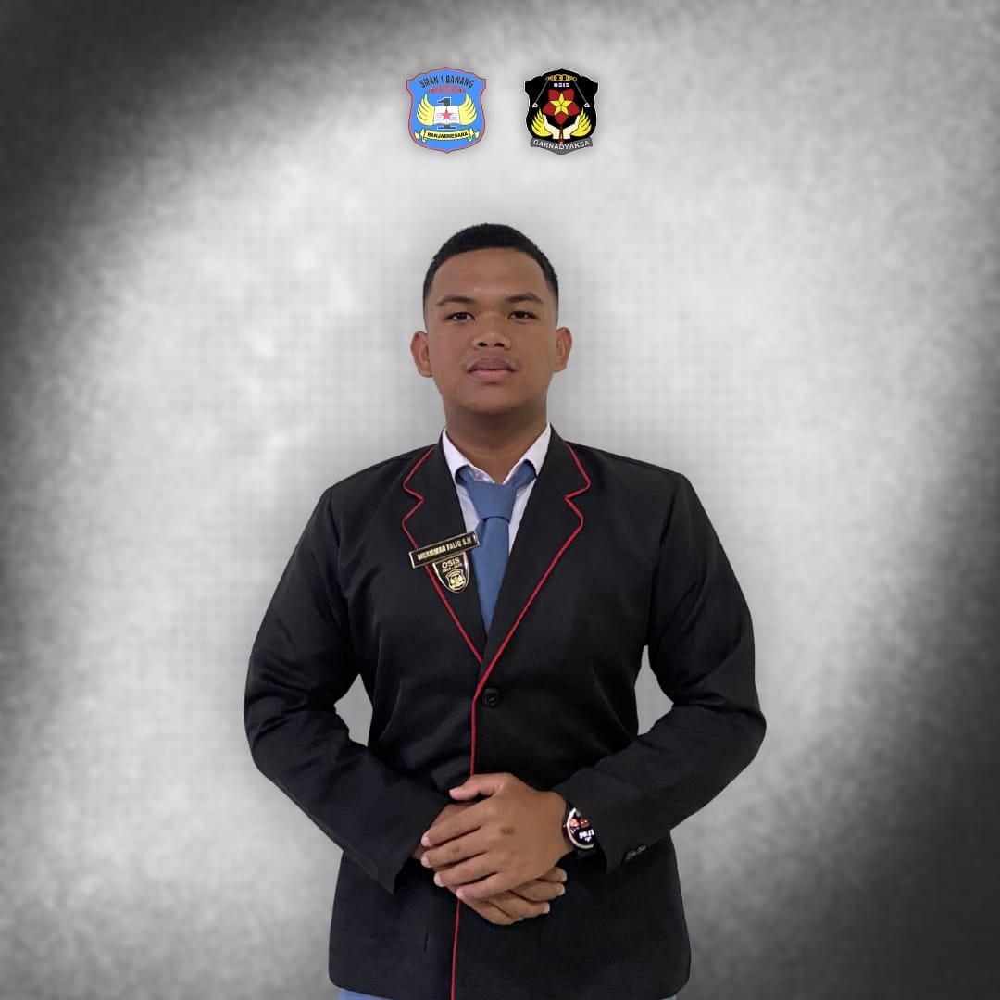

GARNADYAKSA



Pemimpin organisasi yang bertanggung jawab mengkoordinasikan dan mengawasi berjalannya seluruh kegiatan, mengambil keputusan, serta memastikan program kerja berjalan dengan baik.
Wakil Ketua OSIS membantu dalam menjalankan kegiatan organisasi di sekolah. Tugasnya bukan cuma mendampingi, tapi juga ikut mengatur jalannya program kerja supaya semua kegiatan bisa berjalan lancar. Wakil Ketua juga jadi penghubung antara ketua dan anggota OSIS, ikut memberi ide, serta membantu mengambil keputusan.